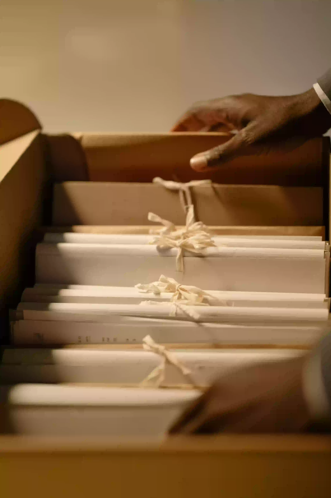
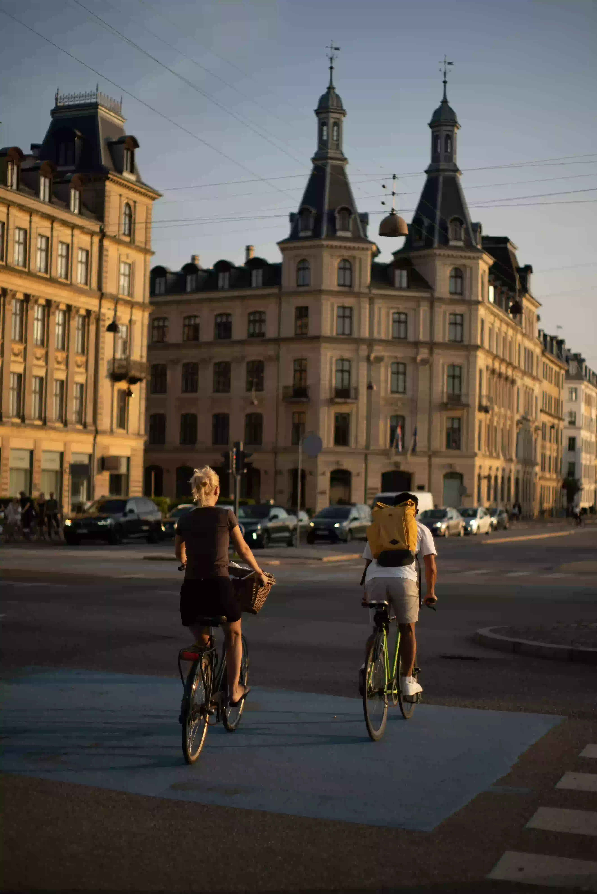
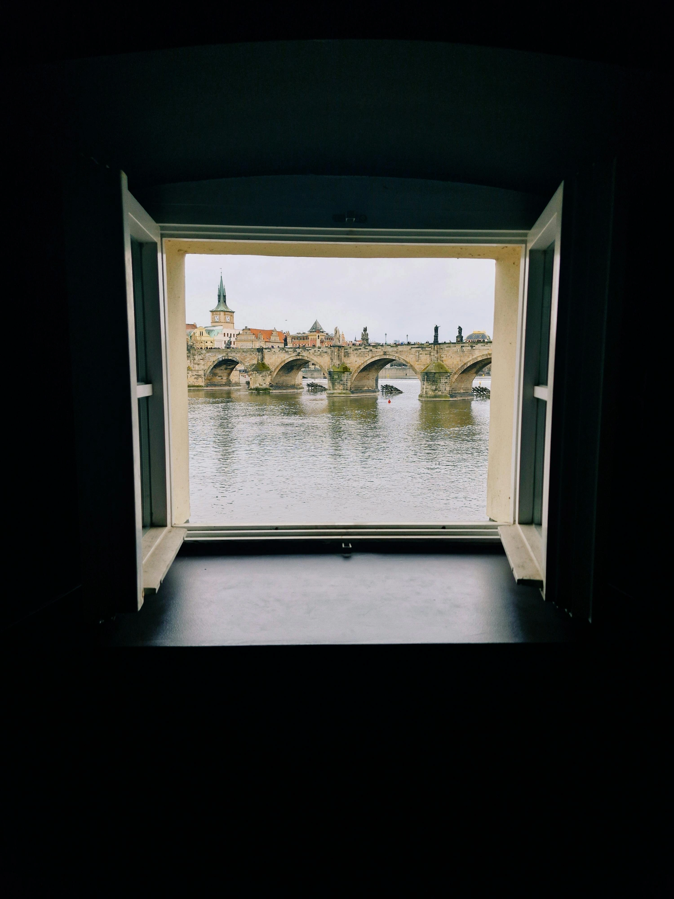

Getting settled

Moving guide
Moving to Copenhagen can feel overwhelming at first. This guide explains the most important steps for getting settled, such as registration, obtaining a CPR number, opening a bank account, and finding housing. It helps make the transition to life in Denmark easier.
Check-list
